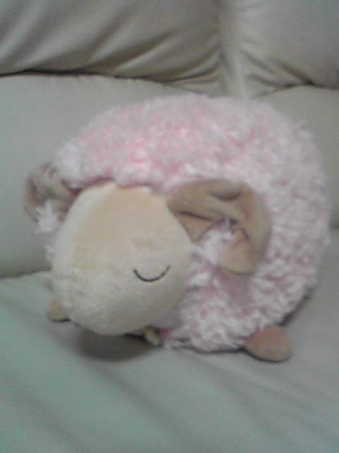

|
Back
【2008年度入部メンバー】
A. Sax
| No Image |
名前： 市川貴浩（イチカワタカヒロ） |
学校： 名大工学部 |
| 主食: コカ・コーラ |
好きな色： オレンジ |
| 好物： シソの天ぷら、大根おろし、ふじりんご |
コカ・コーラのコーラ（赤いの）以外は認めたくないです。 |
| 好物２：ヘッドホン |
ヘッドホン５つ持ってるけど
全部壊してしまいました…… |
| No Image |
名前： 齋藤美幸（サイトウミユキ） |
- |
| - |
- |
| - |
- |
| - |
- |
T. Sax
| No Image |
名前： 竹下侑里（タケシタユウリ） |
学校・学部:名古屋大学 医学部 保健学科 検査技術科学専攻 |
| 担当楽器:テナーサックス |
誕生日:１月２０日 |
| 血液型:Ｂ |
高校のときの部活:吹奏楽 |
| 所属:ＤＭ |
好きな色:ピンク&紫 |
| No Image |
名前： 田川結唯（タガワユイ） |
大学＆学部:南山大学 経営学部 |
| 担当楽器:テナーSax |
誕生日:1989.8.17 |
| 血液型:Ｏ型 |
高校の部活:陸上部 |
| 所属:ＤＭ |
好きな色:ワインレッド |
Trumpet
| No Image |
名前： 岩間麻美（イワママミ） |
- |
| - |
- |
| - |
- |
| - |
- |
|  |
名前： 水野晴菜（ミズノハルナ） |
大学→名大文学部地理学 |
| 血液型→Ｏ型 |
性格→Ｏ型 |
| 好きなこと→ひなたぼっこ |
苦手なもの→エレベーター |
| 基本装備→飴 |
基本思考→なんとかなる |
| No Image |
名前： 竹内佑太（タケウチユウタ） |
大学＆学部： 名古屋工業大学工学部 |
| トランペットやってま～す |
毎日数学と物理の日々ですね～汗 |
| 好きなラッパマンはマイルス、ボビー・シュー、あとルー・ソロフです～ |
クルマが好きです～ |
| バイクも好きです～ |
つまりエンジンが好きなんですね～ |
Trombone
| No Image |
名前： 伊藤愛穂（イトウマナホ） |
大学:南山大学 経営学部 |
| 担当楽器:Ｔｂ |
誕生日:1990.2.24 |
| 血液型:ＡＢ型 |
高校のときの部活:空手部 |
| 所属:ＤＭ |
好きな色:ショッキングピンク・黄色 |
| No Image |
名前： 岩田悠馬（イワタユウマ） |
名古屋大学法学部 |
| 4月1日生まれ |
血液型O型 |
| 愛知高校出身 |
趣味 ウイイレ |
| 嫌いな食べ物 マヨネーズ |
あだ名 アニキ |
|
名前： 松浦翔（マツウラショウ） |
大学＆学部： 工学部社会環境工学科 |
| あだな： コッペ |
出身校： 藤枝東高校 |
| 目標１： 善い変態になる |
目標２： 単位を落とさない |
| 目標３： 痩せる |
目標４： 寝坊しない |
Piano
| No Image |
名前： 安藤瑞穂（アンドウミズホ） |
大学＆学部： 名古屋大学 経済学部 |
| 楽器： Pf |
好きなたべもの： お米 |
| 好きなごはん： 赤飯 |
好きじゃないごはん： 五目ご飯 |
| 血液型： B型 |
誕生日： 10月11日 |
Guitar
| No Image |
名前： 鶴田浩貴（ツルタヒロキ） |
大学＆学部： 名古屋大学工学部 |
| 好きな食物： もつ鍋 |
好きな生物： アマガエル、ネコ |
| 好きな作家： 町田康、カフカ、古川日出男、村上春樹 |
好きな映画： ダンサーインザダーク、博士の異常な愛情、ショーシャンクの空に |
| ジャズ以外で聴く音楽： エレクトロニカ、シューゲイザー、ポストロック、プログレ等 |
趣味： Ｂ級映画の鑑賞 |
Bass
| No Image |
名前： 坂谷太基（サカタニタイキ） |
- |
| - |
- |
| - |
- |
| - |
- |
Drums
| No Image |
名前： 坪井陽香（ツボイハルカ） |
大学:南山大学 経営学部 |
| 担当楽器:Drum |
誕生日:1989.05.26 |
| 血液型:たぶんA型 |
高校の時の部活:陸上部 |
| 所属:DM |
好きな色:黒 |
Back
|